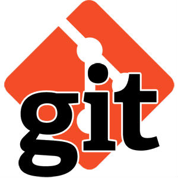

- Git — распределенная система контроля версий.
- На практике это означает очень простую вещь.
- Каждый разработчик держит у себя на диске отдельный репозиторий.
- Обратите внимание — не копию репозитория, не некоторые бранчи,
- а тупо отдельный и при этом абсолютно полноценный репозиторий.
- Пока мы работаем в рамках своего репозитория, все происходит в точности, как в Subversion.
- Мы коммитим и откатываем изменения, создаем, мержим и удаляем бранчи, разрешаем конфликты и тд.
- Помимо этого, предусмотрены команды для работы с репозиториями на удаленных машинах. Например,
- «git push» означает мерж локальных изменений в удаленный репозиторий,
- а «git pull» — наоборот, мерж изменений из удаленного репозитория в локальный.
